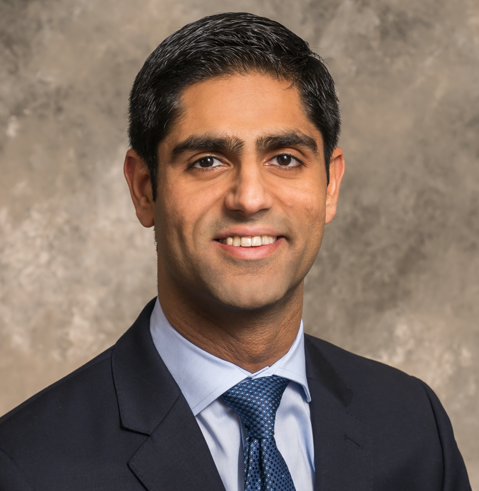

Cardiologist · Data Scientist · Yale University
Improving cardiovascular outcomes through machine learning, clinical informatics, and AI-driven precision medicine.

About
I am a cardiologist and data scientist at Yale University, where I direct the Cardiovascular Data Science (CarDS) Lab. My work sits at the intersection of clinical medicine and computational methods—using electronic health records, electrocardiography, cardiovascular imaging, and wearable devices to build tools that improve how care is delivered to patients with or at risk for heart disease.
My research develops and validates machine learning and AI approaches that translate large-scale digital health data into actionable clinical insights. A central aim is precision cardiovascular care: identifying the right patients, the right interventions, and the right timing—at scale, and in populations historically underserved by conventional risk tools.
I trained in medicine at the All India Institute of Medical Sciences, completed internal medicine residency at the University of Iowa, and cardiology fellowship and postdoctoral research training at UT Southwestern Medical Center, where I also earned a Master of Clinical Sciences. I serve as Associate Editor for Artificial Intelligence and Digital Health at JAMA.
Recognition
My work has been recognized with the Douglas P. Zipes Distinguished Young Scientist Award (ACC, 2026), the Young Physician-Scientist Award (ASCI, 2023), the Blavatnik Award for Innovation (2023), the Doris Duke Clinician Scientist Development Award (2022), and the Jeremiah Stamler Distinguished Young Investigator Award (AHA, 2021). I am a Fellow of the American College of Cardiology (FACC) and the American Heart Association (FAHA), and board-certified in Cardiovascular Disease and Clinical Informatics. I have served as Special Advisor for AI to the American College of Cardiology and on international scientific advisory boards including the British Heart Foundation Centre of Excellence at King's College London and the Friede Springer Cardiovascular Prevention Center at Charité Berlin.
Research Focus
Deep learning applied to echocardiography and cardiac imaging for automated diagnosis, prognostication, and disease screening at scale.
Neural network models that extract latent phenotypes from the 12-lead and single-lead ECG to detect structural heart disease, cardiomyopathy, and arrhythmia risk.
Large language models and structured EHR data to characterize disease burden, treatment patterns, and quality of care at population scale.
Machine learning on continuous wearable data for passive detection of cardiac events and monitoring of patients with heart failure.
Designing and auditing AI models for fairness across populations; extending validated tools to low- and middle-income country contexts.
Real-world evidence and computational phenomapping for personalized inference from clinical trials to diverse patient populations.
Roles & Affiliations
Selected Work
A representative sample. Full list on Google Scholar and PubMed.
Consulting & Advisory
I advise healthcare technology companies, medical device manufacturers, pharmaceutical firms, health systems, and investment firms on the development, validation, and responsible deployment of AI tools in cardiovascular and broader clinical settings. I bring both the scientific rigor of academic research and the clinical perspective of a practicing cardiologist.
Contact